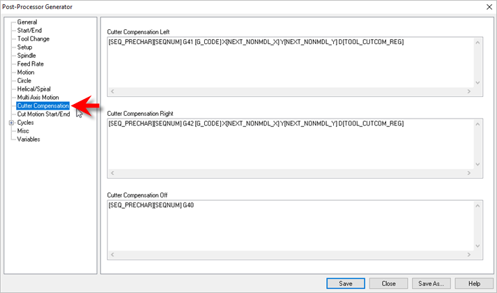
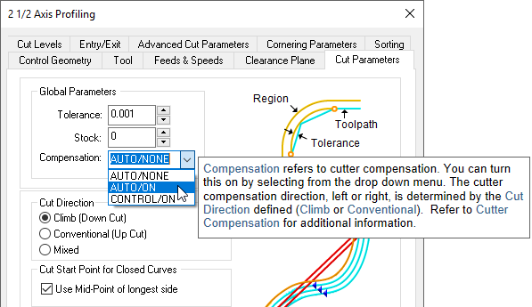
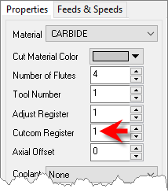

|
<< Click to Display Table of Contents >> Navigation: VisualCAM FAQs > General Training > How to: Use Cutter Compensation |
All toolpaths except engraving are automatically compensated for the tool geometry. Cutter compensation is used typically to compensate for the difference in the dimensions of the actual cutter used in machining and the cutter used for programming in VisualCAM. For example, if the cutter used in programming is 0.25 inches and due to tool wear the actual cutter is only 0.24 inches in size, you can compensate for this at the controller rather than having to re-program the operation in VisualCAM.
Cutter compensation is used extensively in production (high volume) machining where the machine operator can compensate for tool wear before having to stop and replace the tool or insert.
In order to do this you need to do the following:
1.Turn cutter compensation on in the operation to Auto/ON or CONTROL/ON.
2.Specify the cutter compensation value and the compensation register in the controller (the controller needs to be capable of doing this).
3.Please make sure the post processor is configured to output cutter compensation. This is defined under the Cutter Compensation section in the post processor generator. Most controllers expect an X & Y motion on the same line as cutter compensation.
Cutter Compensation Left [SEQ_PRECHAR][SEQNUM] G41 [G_CODE] X[NEXT_NONMDL_X] Y[NEXT_NONMDL_Y] D[TOOL_CUTCOM_REG] Cutter Compensation Right [SEQ_PRECHAR][SEQNUM] G42 [G_CODE] X[NEXT_NONMDL_X] Y[NEXT_NONMDL_Y] D[TOOL_CUTCOM_REG] Cutter Compensation Off [SEQ_PRECHAR][SEQNUM] G40  |
A few things to watch out for:
1.Cutter compensation makes sense only in 2-1/2 axis operations. If you are using roughing (pocketing & facing) the compensation will be turned on only in the final passes.
2.Make sure you are using Climb or Conventional cut traversal in any of the methods that you want to turn compensation on.
 |
3.Make sure you have a linear motion for the controller to turn on the compensation for. If your first motion is an arc the controller will not be able to turn on the compensation. Thus, in 2-1/2 axis profiling, make sure there is a linear entry motion for the controller to be able to turn compensation on & linear exit to turn off compensation.
If you are looking to compensate for the full tool diameter, set Stock = -0.125 under the cut parameters tab. (0.125 being the radius of the tool). This would generate the toolpath ON the curve. This would invalidate the simulation as the tool tip stays on the drive geometry.
Note: The Cutcom Register is set under the Create/Select Tool definition dialog.
